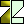
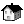

{kind=link}
View->OpenGL view menu one can
get the OpenGL view of the MainWindow also
There are two optional OpenGL viewers:
- Coin3D-based viewer is the most powerful.
The viewer features and capabilities
were present (use Microsoft Explorer) 12/6/2006 S&C meeting with
(see the PowerPoint version
of the presentation also)
The based GUI interface of the viewer is combination of theSoQtExaminerViewer SoQtPlaneViewer It has a convenient interface for repositioning and reorientation of the camera, by panning, rotating and zooming it's position.
The following controls can be used:
- hold down left mousebutton and move mouse pointer to rotate the camera around it's current focal point (the focal point can be changed by doing a seek operation)
-
hold middle mousebutton to pan (or a
CTRL - hold down left + middle mousebutton to zoom / dolly, or CTRL + middle mousebutton, or CTRL + SHIFT + the left mousebutton
-
click
's' - right mousebutton opens the popup menu
- click 'ESC' key to switch to and from 'camera interaction' mode and 'scenegraph interaction' mode (see setViewing() documentation)
- 'q' quits the application
- Hitting any of the
 ,
or
,
or
 buttons in the panel on
the left side of the rendered canvas will "flip" the current camera direction around it's focal point
to point along the selected axis (towards negative infinity).
buttons in the panel on
the left side of the rendered canvas will "flip" the current camera direction around it's focal point
to point along the selected axis (towards negative infinity).
- Hitting any of the "cutted" , or  buttons in the panel will position the so-called clip plane at the center of the scene and orthogonal to the selected axis.
- The SoQtExaminerViewer provides a user decoration's button for toggling between orthographic or perspective camera view volumes and projection methods. This is the bottom-most click button on the right decoration border.
- It also inherits the decoration buttons from the
SoQtFullViewer on the right side:
- the arrow for switching to "scenegraph interaction" mode,
- the hand for setting back to "camera interaction" mode,
-  the house for "reset camera to home position",
- the blueprint house for "set new camera home position",
- the eye for "zoom camera out to view full scene" and
- the flashlight for setting "click to seek" mode.
-
This viewer based on QGLVeiwer class
One can find there the mouse behaviour and the keyboard shorcuts as well.
{kind=link}
{kind=link}
{kind=link}
{kind=link}